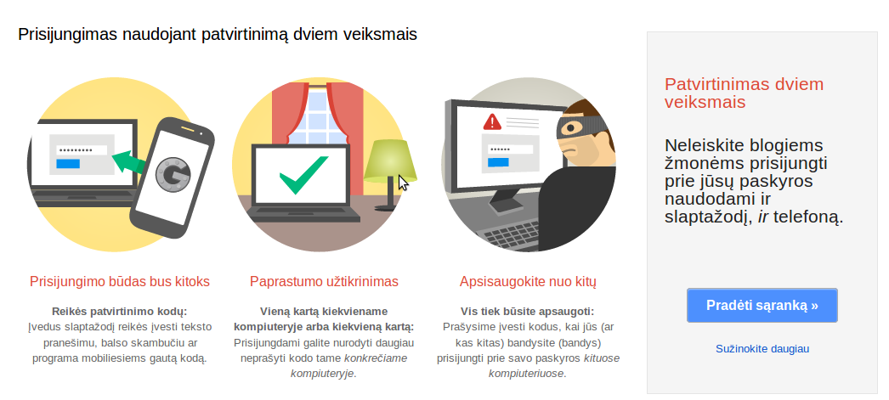

Google informaciją kam ši funkcija yra reikalinga bei kaip ją
aktyvuoti galima rasti
čia.
Prisijungimo dviem veiksmais aktyvavimas susideda iš tokių
pagrindinių veiksmų:
- Pačios funkcijos įjungimo.
- Atsarginių kodų atsispausdinimo.
- Programų slaptažodžių sukūrimo.
Pastabos:
-
Vykdant žemiau pateiktus veiksmus saugumo sumetimais gali
paprašyti iš naujo įvesti prisijungimo slaptažodį.
Funkcijos įjungimas
-
Prisijungti prie savo *@nmakademija.lt
paskyros.
-
Nueiti į puslapį
https://accounts.google.com/SmsAuthConfig
ir sekti jame pateikiamas instrukcijas. Žemiau pateikti tie
patys žingsniai su komentarais:
-
Paspauskite „Pradėti sąranką“:

-
Įveskite savo telefono numerį ir paspauskite „Siųsti
kodą“:
-
Į telefoną turėtumėte gauti teksto pranešimą su
kodu. Jį įvedę paspauskite „Patvirtinti“:
-
Jei prie paskyros prisijungėte kompiuteryje, prie kurio
tik Jūs turite priėjimą, tai galite nurodyti, kad Google
atsimintų šį kompiuterį, kaip patikimą.
-
Patvirtinkite prisijungimo dviem veiksmais įjungimą.
Patvirtinimo dviem veiksmais nustatymų puslapio atidarymas
Aktyvavus patvirtinimą dviem veiksmais naršyklėje turėtų
būti rodomas nustatymų puslapis. Jei norėsite vėliau keisti
nustatymus, tai šį puslapį galite pasiekti tokiu būdu:
-
Prisijunkite prie Gmail su savo
*@nmakademija.lt paskyra.
-
Dešiniajame viršutiniame kampe spauskite ant savo
elektroninio pašto adreso ir atsidariusiame meniu pasirinkite
„Paskyra“:

-
Atsidariusiame puslapyje, kairėje pusėje esančiame meniu,
pasirinkite „Sauga“:
-
Tada prie patvirtinimo dviem veiksmais pasirinkite
„Redaguoti“:
Atsarginių kodų atsispausdinimas
Atsarginiai kodai yra reikalingi tam, kad galėtume prisijungti
prie paskyros tuomet, kai neturite prieigos prie savo telefono.
-
Atsidarykite dviejų veiksmų prisijungimo nustatymų
puslapį, kaip buvo paaiškinta anksčiau, ir pasirinkite
„Rodyti atsarginius kodus“:
-
Jei turite spausdintuvą, tai atsidariusiame puslapyje
pateiktus kodus galite atsispausdinti, o jei jo neturite –
tai nusirašyti.
Programų slaptažodžių sukūrimas
Kadangi įvairios programos, pavyzdžiui, pašto („Thunderbird“,
„Evolution“, „Outlook“, Gmail programėlės mobiliuosiuose
telefonuose) ir pokalbių („Pidgin“, „GTalk“),
nepalaiko dviejų veiksmų prisijungimo, tai norint jomis naudotis
reikia sukurti specialius konkrečių programų slaptažodžius.
-
Atsidarykite dviejų veiksmų prisijungimo nustatymų
puslapį, kaip buvo paaiškinta anksčiau, ir pasirinkite
„Valdyti konkrečių programų slaptažodžius“:
-
Atsidariusiame puslapyje įveskite pavadinimą ir
paspauskite „Generuoti slaptažodį“:
-
Pateiktą slaptažodį nukopijuokite į norimą programą ir
pabandykite prisijungti. Jei prisijungimas buvo sėkmingas,
puslapyje paspauskite „Atlikta“:
-
Nenaudojimus slaptažodžius yra patartina panaikinti, tada
jais naudojantis nebebus galima prisijungti. Tai galima
padaryti paspaudus „Panaikinti“, esantį šalia
slaptažodžio: